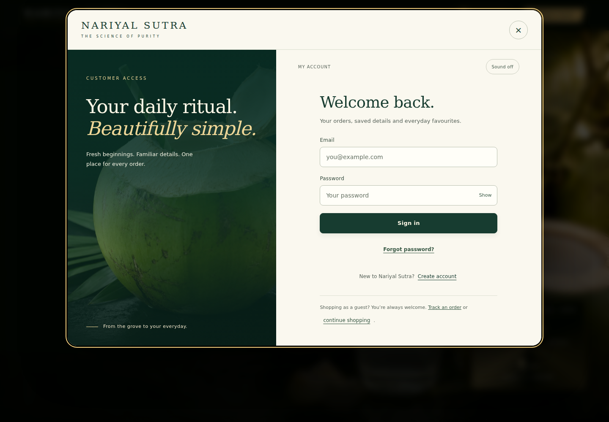
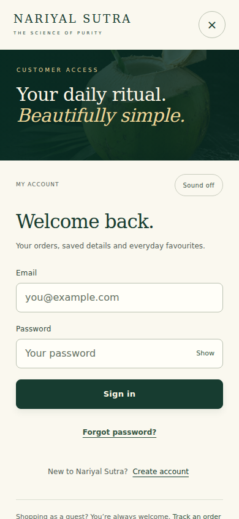
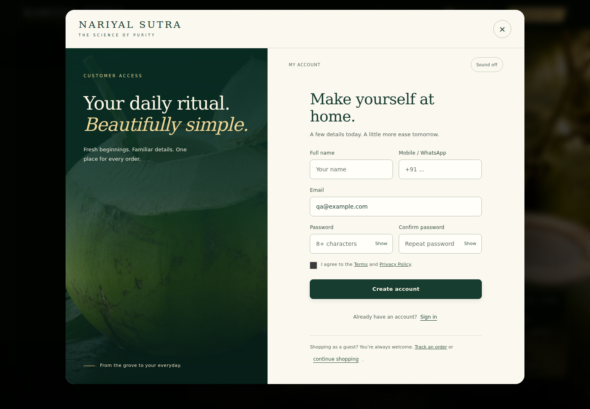
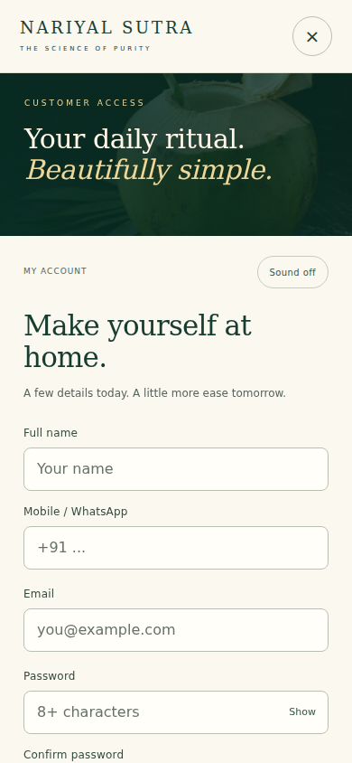
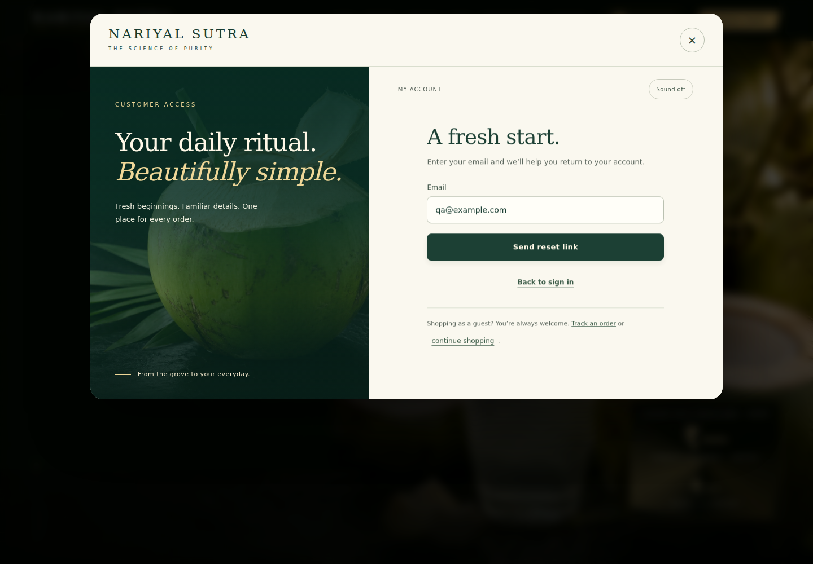
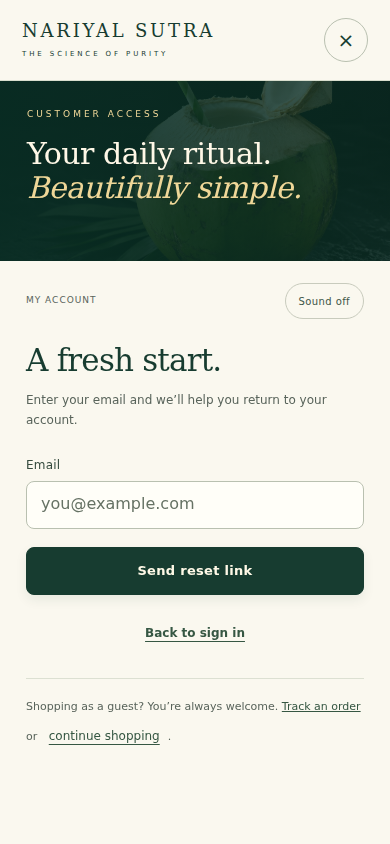
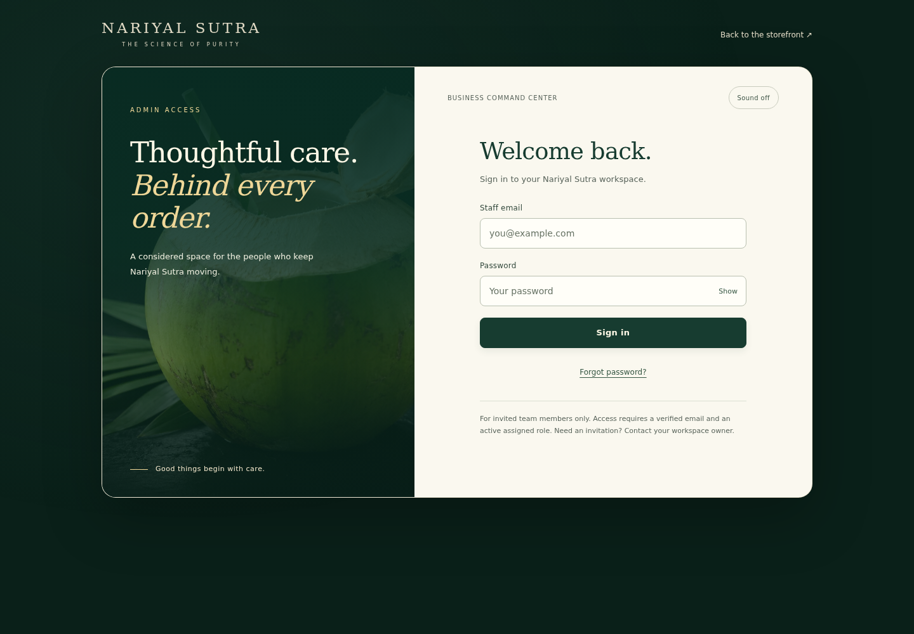
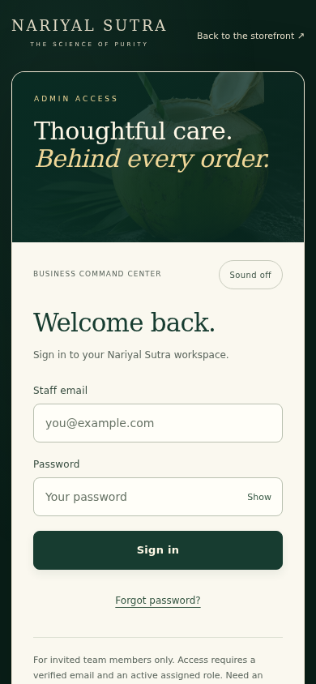
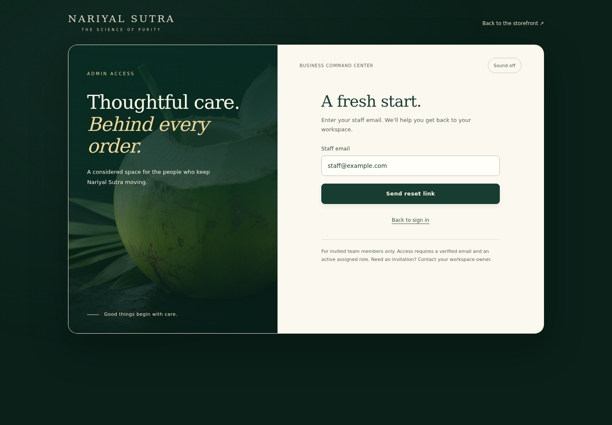
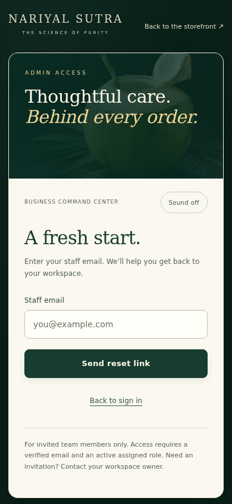

Shared customer and Admin experience. Local QA evidence only. No production deployment.
Implementation and verification notes · 39 passing browser checks · Changed files










Silent screen recordings. Sound defaults off; an explicit toggle enables the short cue. Reduced-motion mode and sound behavior are covered in the test results.
Sound enabled screenshot · Reduced-motion screenshot